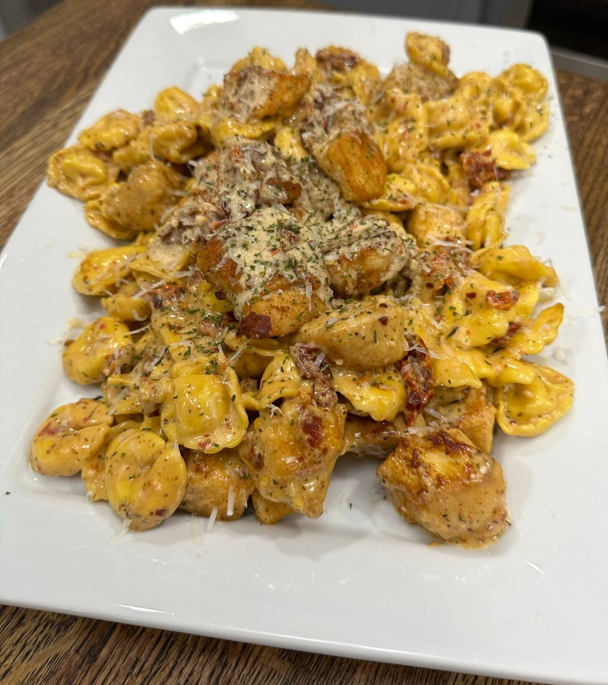

Marry Me Chicken Tortellini

Description
We all know and love Marry Me Chicken, (if you don’t, you’re missing out!)
and now you can get that same delicious flavor but with tortellini! I love
finding ways to take meals that my family already loves and making new and
exciting meals with them! My kids love this recipe too which is always a win in my eyes.
This is an easy recipe that you can make for yourself and your family in about 30 minutes or less.
Ingredients
- 2 large chicken breasts sliced into cubes
- 1/2 cup of flour
- 1/2 tsp each of salt pepper, paprika, garlic powder
- 2 TBSP olive oil
- 2 TBSP butter
- 2 TBSP of minced garlic
- 1 cup of chicken broth
- 1 cup of heavy cream
- 1 cup of Parmesan cheese
- 1 tsp of red pepper flakes
- 1/2 tsp each of oregano and thyme
- 1/3 cup of chopped sun dried tomatoes
- 1 19 oz bag of frozen tortellini
Steps
- mix together flour, salt, pepper, garlic, and paprika
- dredge chicken breasts into the flour/seasoning mixture(salt,pepper,paprika,garlic powder)
- in a skillet heat olive oil and butter on medium heat
- cook chicken for 4-5 minutes on each side until golden brown and reaches 165 degrees
- take the chicken out of the skillet and put it aside
- add garlic, sun-dried tomatoes, and chicken broth to the skillet
- lower heat and add heavy cream and Parmesan cheese
- add the red pepper flakes, oregano, and thyme
- stir together well and let simmer
- add one bag of frozen tortellini, cover, and let cook for a few minutes
- once the tortellini is tender add the chicken back to the skillet and serve